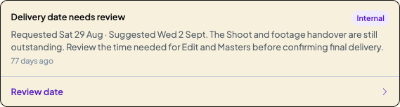
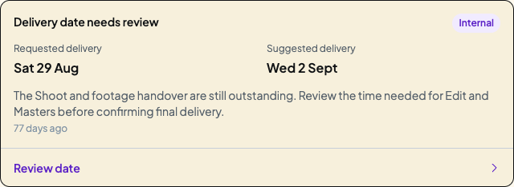

Implemented on 29 October 2026. Requested delivery and Suggested delivery now have their own labelled values, followed by the existing reason and Review date action.
The original dates, Internal/External copy, yellow attention colour, timestamp and agreement safeguards are retained. No working records were changed.


Checked keyboard review/close behaviour, Client-only visibility and desktop fit. The Client view keeps the producer-reviewed explanation. Resolved historical summaries and other Chat system posts retain their existing layout.
No messages sent, date proposals submitted or Client agreements recorded. Mobile remains deferred.